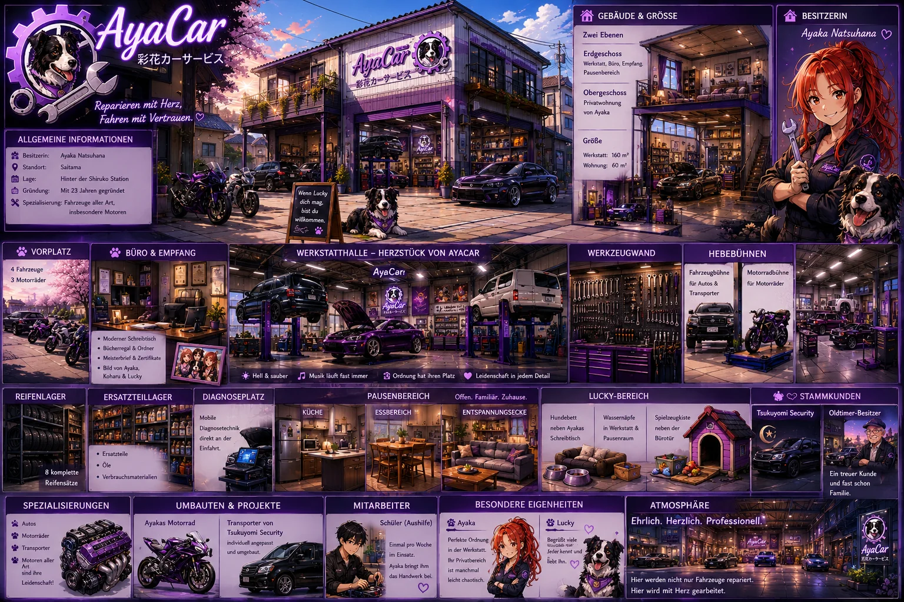

Werkstatt
Ordnung mit Persönlichkeit
Jedes Werkzeug besitzt seinen Platz, die Halle ist hell und gepflegt, und trotzdem wirkt kein Bereich steril. Persönliche Fotos, Musik und Luckys Plätze machen AyaCar unverkennbar zu Ayakas Welt.

Handwerk · Freundschaft · Leidenschaft
彩花カーサービス
„Wo jedes Fahrzeug mit Herz behandelt wird.“Ideenentwurf · visuelle Referenz
Der Ort
AyaCar ist Ayaka Natsuhanas Lebenstraum: eine mittelgroße, hervorragend organisierte Werkstatt, über der sich zugleich ihre private Wohnung befindet. Arbeit und Zuhause gehen hier beinahe nahtlos ineinander über.
Atmosphäre
Zwischen Werkzeugwagen, Motorengeräuschen und dem Duft nach Öl läuft fast immer Musik. Lucky begrüßt viele Stammkunden noch vor Ayaka – und genau das macht AyaCar zu mehr als einer Werkstatt.
Werkstatt
Jedes Werkzeug besitzt seinen Platz, die Halle ist hell und gepflegt, und trotzdem wirkt kein Bereich steril. Persönliche Fotos, Musik und Luckys Plätze machen AyaCar unverkennbar zu Ayakas Welt.
Handwerk
Ayaka arbeitet an Autos, Motorrädern und Transportern. Ihr besonderes Talent liegt bei Motoren und individuellen Umbauten – darunter auch Fahrzeuge von Tsukuyomi-Security.
Alltag
Der offene Pausenbereich, die Küche und das Sofa machen die Werkstatt zugleich zu einem Treffpunkt. Hier entstehen viele der leisen Begegnungen, die Tsuki no Serenade prägen.